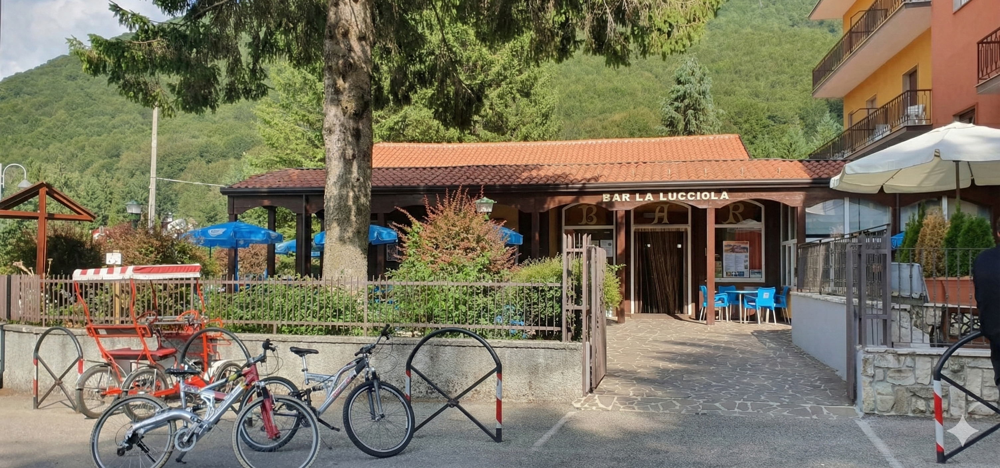

Un buon inizio.
Caffè, cappuccino e qualcosa di dolce. La prima pausa della giornata ha un sapore speciale.
Caffetteria ↗Il piacere delle cose semplici, il tempo di stare insieme. Ti aspettiamo sull’altopiano del Laceno.

LACENO · BAGNOLI IRPINO · IRPINIALa Lucciola è una delle attività storiche dell’altopiano del Laceno. In via dei Prati, ai piedi del Monte Cervarolo, accoglie chi vive la montagna e chi la scopre per la prima volta.
Una sala con camino per le giornate più fresche, il giardino tra abeti e pini nella bella stagione. Il posto in cui concedersi una pausa, prima di ripartire.
Vieni a trovarci ↗Caffè, cappuccino e qualcosa di dolce. La prima pausa della giornata ha un sapore speciale.
Caffetteria ↗Cioccolata calda, tè e tisane: scegli il tuo modo di ritrovare il calore dopo una giornata all’aperto.
Bevande calde ↗Un aperitivo, un brindisi e il piacere della compagnia. Perché a volte basta fermarsi un po’ di più.
Aperitivi e drink ↗La nostra montagna cambia volto.
La voglia di accoglierti rimane.
Via dei Prati, Laceno
83043 Bagnoli Irpino (AV)
Per gli orari aggiornati consulta il menù. Per informazioni o esigenze particolari, chiamaci: saremo felici di aiutarti.
Consulta gli orari ↗Se sei già passato a trovarci, racconta la tua esperienza.